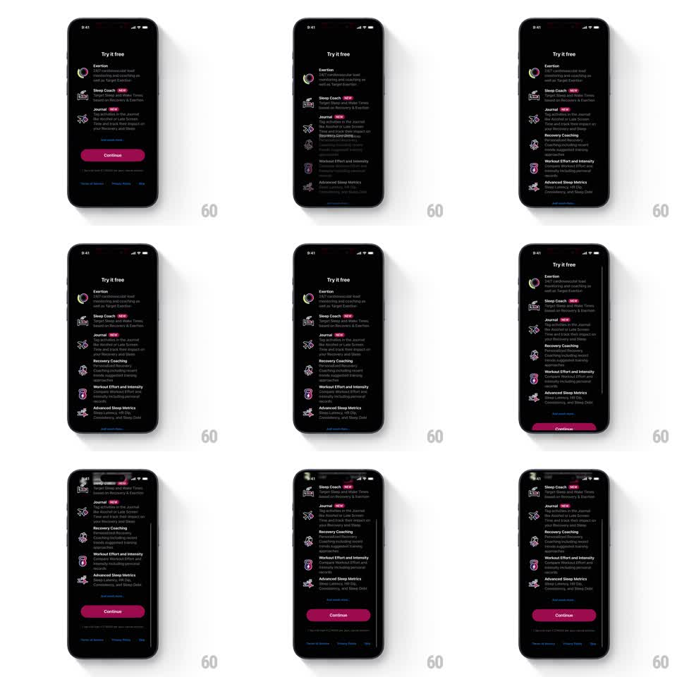

Media
Frame-by-frame

Rebuild this interaction 1:1: The Outsiders' "Try it free" paywall - a scrolling value-prop list where each feature (Sleep Coach, Journal, Recovery Coaching...) fades and slides into view as it enters, with the Continue button pinned below.

Rebuild this interaction 1:1: The Outsiders' "Try it free" paywall - a scrolling value-prop list where each feature (Sleep Coach, Journal, Recovery Coaching...) fades and slides into view as it enters, with the Continue button pinned below. ## Integration Integration: stack-agnostic spec - springs given as stiffness/damping, timed motions as duration + curve; map every value to your framework and animation library of choice. ## Scene The Outsiders paywall, black: "Try it free" title, then a scrollable list of features each with a line icon, bold name, pink "NEW" tag on some, and a one-line description (Exertion, Sleep Coach NEW, Journal NEW, Recovery Coaching, Workout Effort and Intensity, Advanced Sleep Metrics). Bottom: a magenta "Continue" button and legal links (Terms of Service, Privacy Policy). ## Motion spec Pattern: scroll-driven progressive reveal of a value-prop list. - On open, the title and the first three features fade-slide up (24px, 350ms, staggered 90ms); Continue fades in last (300ms, 150ms later). - As the user scrolls, each newly entering feature fades from 0 and slides up 20px, completing within the first 15% of its visible travel (scroll-linked, not timed - it tracks the scroll position). - Items leaving the top of the viewport dim to 30% and compress slightly (scaleY 0.98) as they exit - a soft exit, never a hard cut. - The pink NEW tags shimmer once when they first appear (a 1s highlight sweep across the tag, 300ms after the row settles). - The Continue button and legal footer stay pinned and static through all scrolling. ## Calibration - The reveal is scroll-linked: scroll speed drives reveal speed - no time-based autoplay. - Icons are thin single-color line art; the only saturated elements are the NEW tags and Continue. ## Reduced motion All features render fully visible; no scroll-linked fades or tag shimmers. ## Don't miss - Descriptions are two lines max, grey, and left-aligned under the bold feature name. - The list's bottom leaves clearance for the pinned button - the last feature never hides behind it.